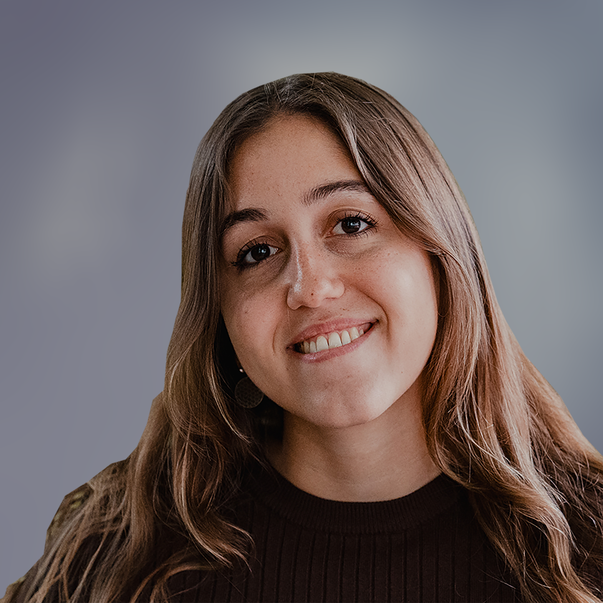

Rabih hat die Teamseite programmiert und die passenden Illustrationen erstellt. Mit seinen grafischen
Fähigkeiten hat er der Webseite einen einheitlichen Stil gegeben und mitgeholfen, das interaktive
Katz-Maus-Spiel zu realisieren. Seine kreative Arbeit hat die visuelle Attraktivität der Webseite
maßgeblich geprägt. Alle drei haben eng zusammengearbeitet und sich gegenseitig unterstützt, um die
Webseite erfolgreich zu gestalten.

Suena hat die Startseite programmiert und mit ihren kreativen Fähigkeiten das ansprechende Design der
Webseite gestaltet. Dabei hat sie dafür gesorgt, dass die Pop-Ups reibungslos und bei der richtigen
Interaktion auftauchen. Ihre Arbeit hat die Benutzerfreundlichkeit der Webseite deutlich verbessert.
Alle drei haben eng zusammengearbeitet und sich gegenseitig unterstützt, um die Webseite erfolgreich
zu gestalten.

Nadia hat die Seite "Alle Catfacts" programmiert und eng mit Suena am Design der Webseite
zusammengearbeitet. Ihr Flair fürs Programmieren war für die gesamte Gruppe eine motivierende
Bereicherung. Ihre technische Expertise trug entscheidend zur Funktionalität der Webseite bei. Alle
drei haben eng zusammengearbeitet und sich gegenseitig unterstützt, um die Webseite erfolgreich zu
gestalten.